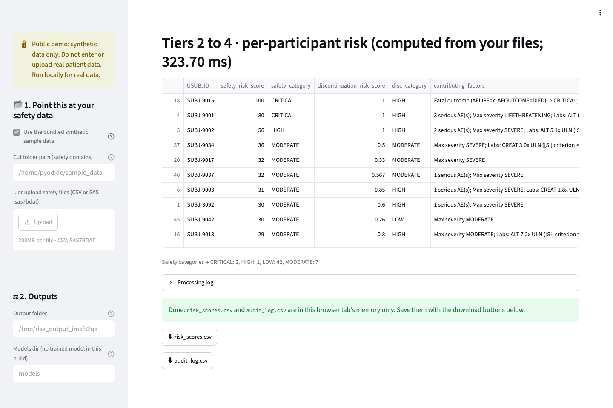

Starting the app in your browser; the first visit downloads about 30 MB.
Loading the page code.

Privacy: Your selected files are processed in this tab and are not sent to a server. Download results before resetting or closing it. GitHub Pages and the runtime CDN receive ordinary page requests, including your IP address.
Limits: Scores summarize configured screening rules; they are not event probabilities or treatment recommendations. Review criteria, units and flags against your study. Evaluation context.
Starting the app in your browser; the first visit downloads about 30 MB.
Loading the page code.
